Base: origin/art/art_ship_010 at 1c96101213a996b2975c31029ef6e823f9ebc745. Frozen environments shown below are unchanged. Composites and layers are review-only.
A — World life / nightlife
Nine selected transparent fragments cover 13 overlapping ambient roles. Native exports are binary-alpha candidates; no names or biographies are assigned.
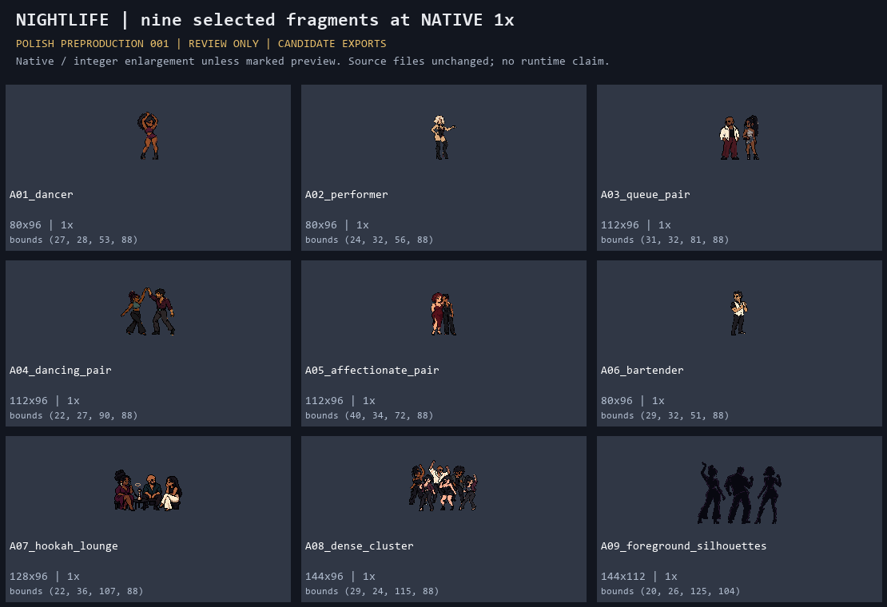
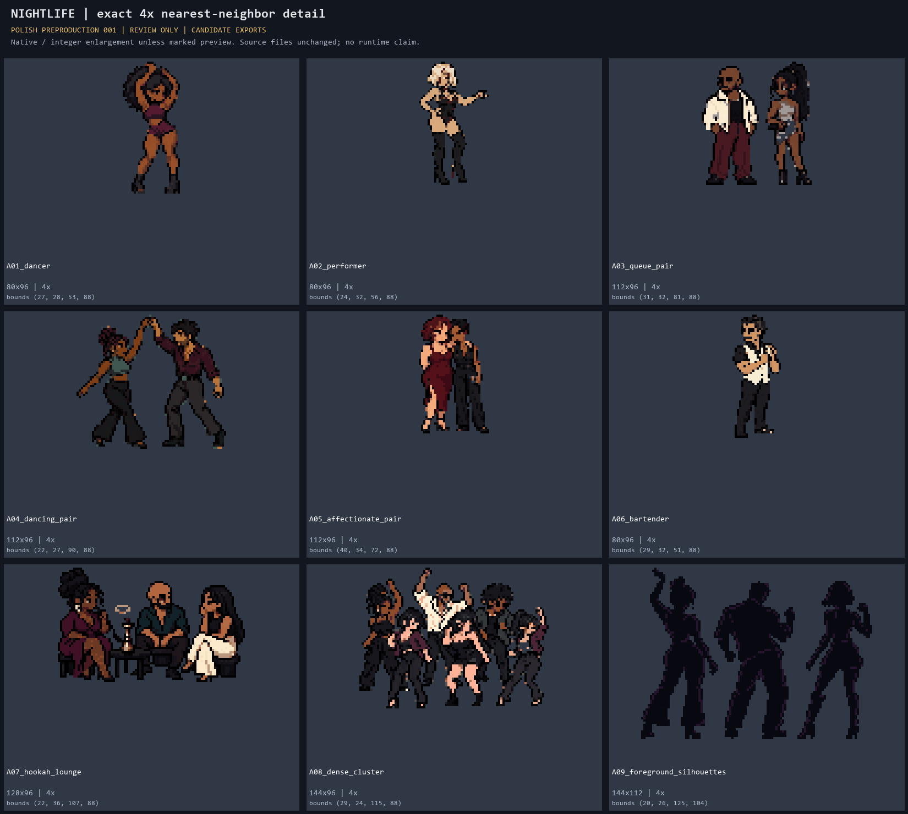
Representative frozen-environment composites
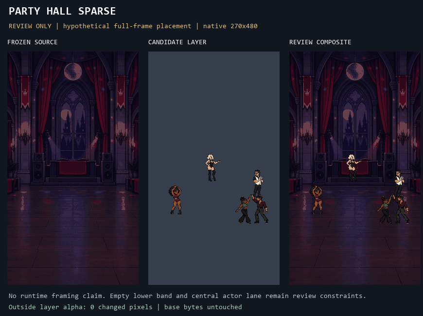
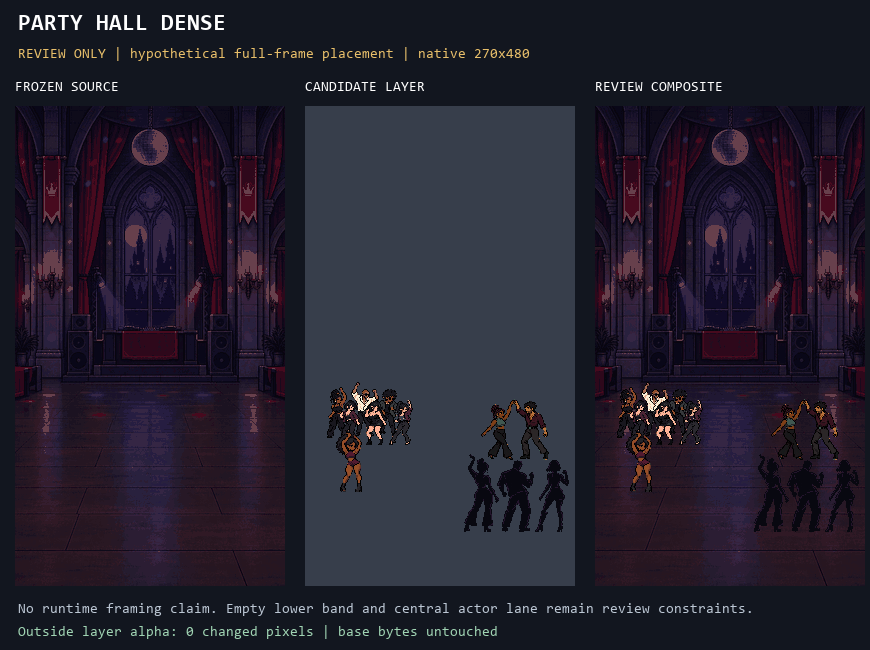
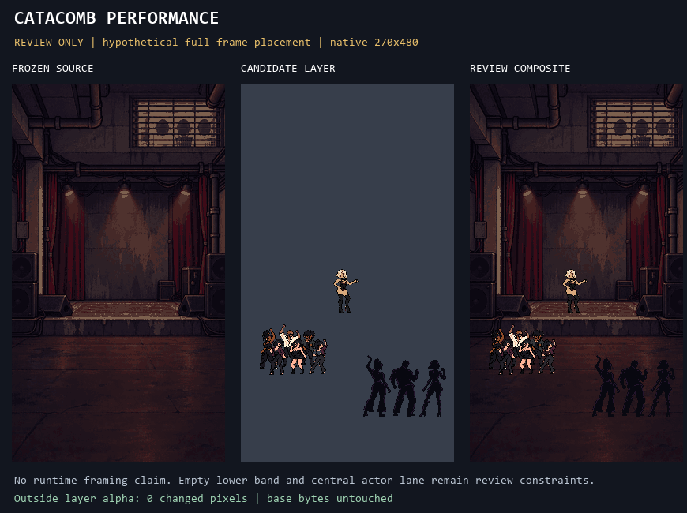
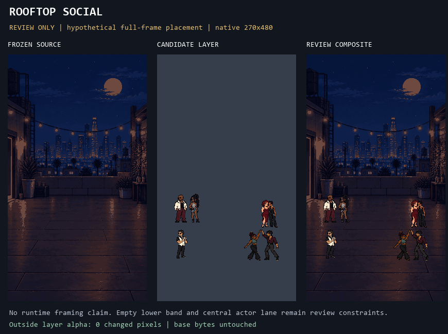
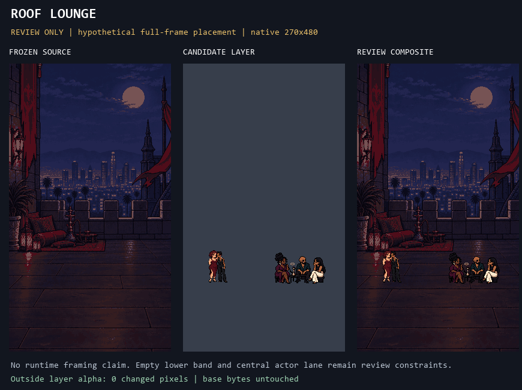
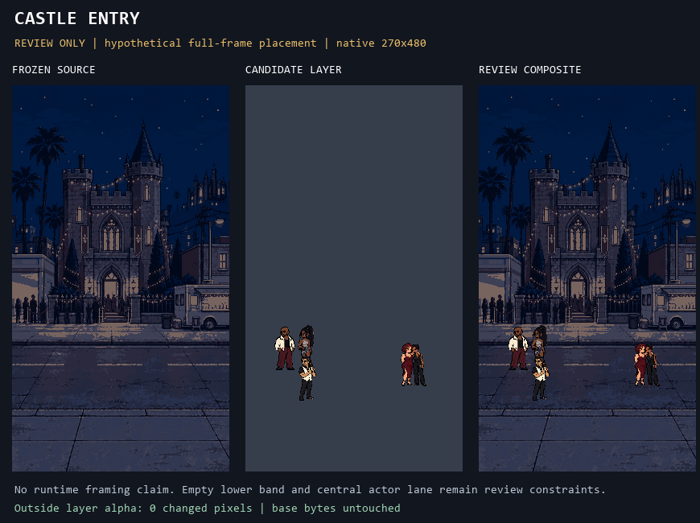
B — Combat spectacle audit
All existing packages have useful fantasies and phase components. The audit generated no supplemental FX.
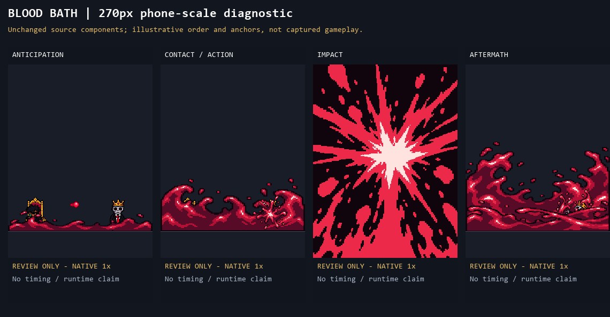
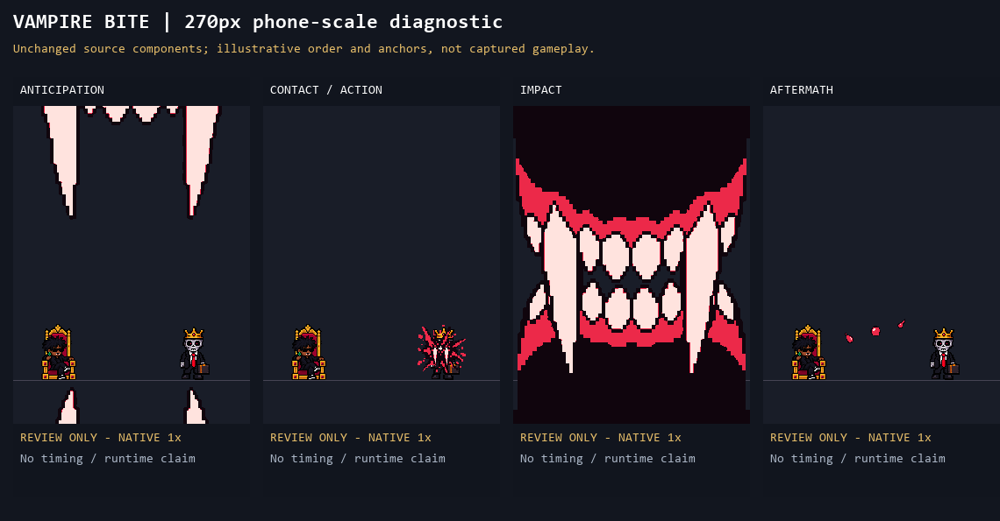
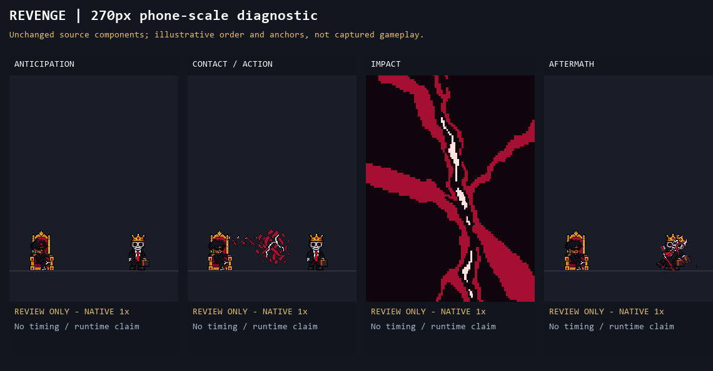
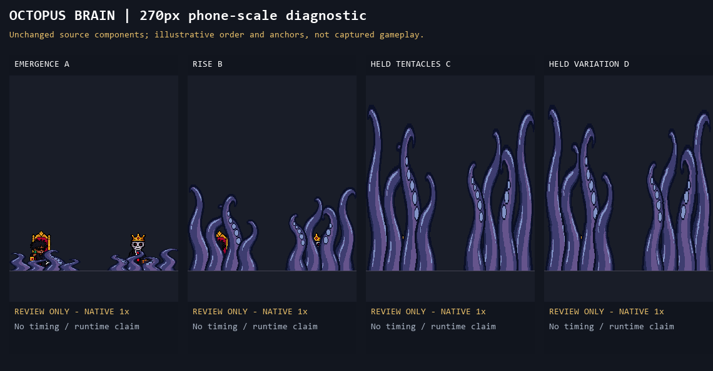
Blood Bath reads POWER, Vampire Bite SPEED, Revenge FEAR and Octopus Brain WEIRDNESS. Remaining gaps concern visibility, release and timing, which static source art cannot settle.
See COMBAT_AUDIT.md and combat_inventory.json.
C — Rich identity continuity
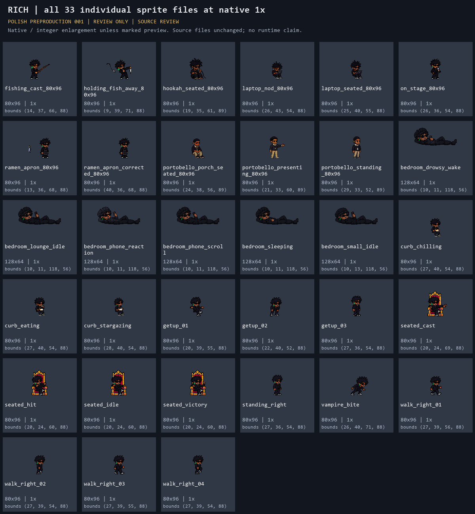
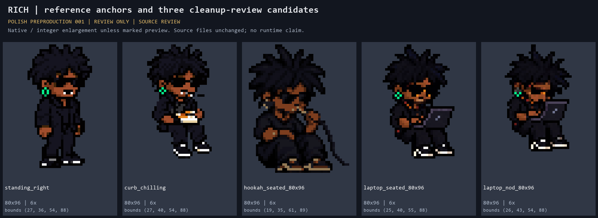
| Classification | Count | Finding |
|---|---|---|
| CONSISTENT | 21 | Leave alone on current evidence. |
| INTENTIONAL VARIANT | 10 | Bedroom bonnet, portrait and authorized Portobello treatment. |
| POSSIBLE IDENTITY DRIFT | 2 | Laptop seated and nod: head/face cluster review. |
| STRONG IDENTITY DRIFT | 1 | Hookah seated: hair, face, earring and footwear cues diverge together. |
Portobello short hair remains authorized. Only the absent green earring tell is flagged for future verification; this is not a request to reverse the transformation.
See RICH_CONTINUITY_AUDIT.md and rich_continuity_audit.json.
Validation and boundaries
Candidate checks 9/9; scene layers 6/6; combat sheet/atlas checks 8/8; no source changes outside this directory before commit. No SEALED material, family identities, blocked Portobello identities, HOLD resolution, runtime code, merge or deployment.
Read VALIDATION_REPORT.md, ONBOARDING_AND_BOUNDARIES.md, validation.json and the package README.md.